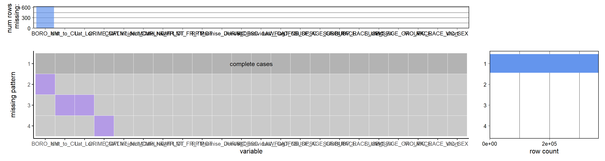
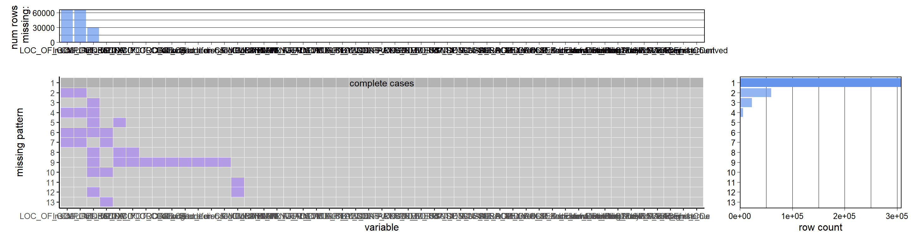

Chapter 3 Data
library(tidyverse)
library(dplyr)
library(lubridate)
library(geosphere)
library(redav) #remotes::install_github("jtr13/redav")
library(ggridges)
library(ggplot2)
library(scales)
library(forcats)
library(Lock5withR)
library(tidyr)
library(vcdExtra)
library(ggmap)
# D. Kahle and H. Wickham. ggmap: Spatial Visualization with ggplot2. The R Journal, 5(1), 144-161. URL http://journal.r-project.org/archive/2013-1/kahle-wickham.pdf
library(RColorBrewer)3.1 Source
As discussed in the Proposal section, the data for this project comes from published crime reports. NYC Open Data (NYC Office of Technology and Innovation (OTI)) in conjunction with New York City Police Department (NYPD) makes public safety data available for anyone online. In particular they publish Complaint Data which contains felony, misdemeanor, and violation crimes reported to the NYPD from 2006 till present.
Year-to-Date (YTD) (2022-01 to 2022-09): https://data.cityofnewyork.us/Public-Safety/NYPD-Complaint-Data-Current-Year-To-Date-/5uac-w243
The dataset contains mostly categorical variables and dates with each row indicating a crime/violation. As of the last update on October 19, 2022, the YTD Dataset contains 397K rows and 36 columns. A data dictionary is provided by NYC Open Data at the link above.
Additional details can be found in the Proposal: https://ds4114.github.io/NYC_Crime_Group32/proposal.html#data-availability
3.2 Data Transformation and Cleaning
This .Rmd file contains the following sections: -Data Loading: To show data was ingested into the environment -Bucketing: To combine values in a derived field for simplifying graphs -Date Transformations: To make strings into dates and extract time information -Derived Geo Fields: To calculate distances between points -Derive Other Fields: To derived other fields and perform minor cleaning operations
We then filter our data frame to relevant records, and then select key fields for ease-of-use. “Relevant” records are defined by time frame and crime category explained more below.
There is also a section at the end on missing data.
3.2.1 Data Loading
#Group32 - This file has been added to gitignore so it will not be uploaded. So we are on the same page and can run the same code, add the csv to your local project folder in a new subfolder "data".
df_raw <- read_csv('./data/NYPD_Complaint_Data_Current__Year_To_Date_.csv'
, col_types= cols(
CMPLNT_NUM = col_character() #was loading as number so numbers with letters were showing as null
)
)
#View(df_raw)
#head(df_raw)
#make a copy of the raw data to manipulate
df <- df_raw 3.2.2 Bucket Crime Types
This code creates a new field to simplify the crime category to reduce the number of unique values.
df <- df %>%
mutate(CRIME_CAT = case_when(
OFNS_DESC %in% c("RAPE", "SEX CRIMES", "HARRASSMENT 2", "FELONY SEX CRIMES", "PROSTITUTION & RELATED OFFENSES") ~ "SEX CRIMES",
OFNS_DESC %in% c("DANGEROUS DRUGS","CANNABIS RELATED OFFENSES","INTOXICATED & IMPAIRED DRIVING","ALCOHOLIC BEVERAGE CONTROL LAW","INTOXICATED/IMPAIRED DRIVING") ~ "DRUG AND ALCOHOL RELATED",
OFNS_DESC %in% c("ROBBERY","GRAND LARCENY","THEFT-FRAUD","PETIT LARCENY","BURGLARY","GRAND LARCENY OF MOTOR VEHICLE","POSSESSION OF STOLEN PROPERTY","THEFT OF SERVICES","BURGLAR'S TOOLS","PETIT LARCENY OF MOTOR VEHICLE","OTHER OFFENSES RELATED TO THEF") ~ "THEFT OR BURGLARY",
OFNS_DESC %in% c("DANGEROUS WEAPONS","MURDER & NON-NEGL. MANSLAUGHTER","KIDNAPPING & RELATED OFFENSES","HOMICIDE-NEGLIGENT,UNCLASSIFIE","HOMICIDE-NEGLIGENT-VEHICLE","KIDNAPPING","FELONY ASSAULT","ARSON","ASSAULT 3 & RELATED OFFENSES","UNLAWFUL POSS. WEAP. ON SCHOOL","MURDER & NON-NEGL. MANSLAUGHTER") ~ "MAJOR VIOLENT CRIMES",
OFNS_DESC %in% c("CRIMINAL MISCHIEF & RELATED OF","UNAUTHORIZED USE OF A VEHICLE","FRAUDS","OFFENSES AGAINST PUBLIC SAFETY","DISORDERLY CONDUCT","JOSTLING","DISRUPTION OF A RELIGIOUS SERV","ESCAPE 3","OFF. AGNST PUB ORD SENSBLTY &","CRIMINAL TRESPASS","VEHICLE AND TRAFFIC LAWS","GAMBLING","OFFENSES AGAINST THE PERSON","OFFENSES INVOLVING FRAUD","FRAUDULENT ACCOSTING","ANTICIPATORY OFFENSES","LOITERING/GAMBLING (CARDS, DIC") ~ "FRAUD/GAMBLING AND MISC",
OFNS_DESC %in% c("NYS LAWS-UNCLASSIFIED FELONY","MISCELLANEOUS PENAL LAW","FORGERY","OFFENSES AGAINST PUBLIC ADMINI","CHILD ABANDONMENT/NON SUPPORT","NYS LAWS-UNCLASSIFIED VIOLATION","OTHER STATE LAWS","OTHER STATE LAWS (NON PENAL LAW)","NEW YORK CITY HEALTH CODE","ADMINISTRATIVE CODE","OTHER STATE LAWS (NON PENAL LA","AGRICULTURE & MRKTS LAW-UNCLASSIFIED","ENDAN WELFARE INCOMP","OFFENSES RELATED TO CHILDREN") ~"OTHER"))There are 5 values with missing “OFNS_DESC”. Since they have valid PD_CD and PD_DESC, we can impute these values from other columns with the same PD_CD. -Two values are for obscenity - 594 PD_CD (categorized as sex crimes) -One values for crime pos weap - 797 PD_CD (categorized as major violent crimes/dangerous weapons) -One value for “place false bomb” - 648 PD_CD (categorized as other) -One value for “noise” - 872 PD_CD (categorized as other)
df$CRIME_CAT[df$CMPLNT_NUM %in% c("243170965", "245874611")] <- "OTHER"
df$CRIME_CAT[df$CMPLNT_NUM %in% c("248613125", "248290778")] <- "SEX CRIMES"
df$CRIME_CAT[df$CMPLNT_NUM %in% ("246605653")] <- "MAJOR VIOLENT CRIMES" #"DANGEROUS WEAPONS"
#No Nulls now
#View(df[is.na(df$CRIME_CAT),])3.2.3 Date/Time Transformation
Per the data dictionary, there is both a “from_date” and a “to_date” when the exact time is unknown. There is also a “report date” for when the crime was reported. Using these fields in conjunction, we can derive a new clean field that is the assumed date of the incident. Assumptions: When there is a range, we will use the “from” date only because is populated well and will on average approximate the frequency of crime over time; when from_date is null, we will use the report_date (does not occur often, see Missing Data Analysis below).
df <- df %>%
mutate(
#use from date and report date if null. If to_date then just use from date and we can argue it averages out since new reports will start as other end
Incident_Date_raw = case_when (is.null(CMPLNT_FR_DT) ~ RPT_DT
,CMPLNT_FR_DT == "(null)" ~ RPT_DT
,TRUE ~ CMPLNT_FR_DT
)
#flag if estimated (ie from date is null or to date is populated)
,Incident_Date_Estimated_Flag = case_when ( is.null(CMPLNT_FR_DT) ~ 'Y'
,CMPLNT_FR_DT == "(null)" ~ 'Y'
,!is.null(CMPLNT_TO_DT) ~ 'Y'
,CMPLNT_TO_DT != "(null)" ~ 'Y'
,TRUE ~ 'N'
)
)
#Convert to times
df <- df %>%
mutate(
#creating date and time together for lubridate
Incident_Date = as.Date(Incident_Date_raw, format = '%m/%d/%Y')
,Incident_Datetime = as.POSIXct(paste(Incident_Date_raw,CMPLNT_FR_TM), format = '%m/%d/%Y %H:%M:%S')
) %>%
mutate(
Incident_HourTime = hour(Incident_Datetime) + minute(Incident_Datetime)/60
,Incident_Month = month(Incident_Date)
,Incident_DayOfWeek = wday(Incident_Date, label = TRUE, abbr = TRUE)
)3.2.4 Geo-Location Fields
This section uses a new package to calcluate the distance between two points in Lat/Long format. Here we are finding the distance from each crime to the center of the main Columbia campus to use later.
#Location of Columbia - hardcoded for calculation
CU_Latitude = 40.807384
CU_Longitude = -73.963036
df$dist_to_CU <- apply(df, 1, function(x)distm(
c(x[which( colnames(df)=="Longitude")],x[which(colnames(df)=="Latitude")])
,c(CU_Longitude,CU_Latitude)
,fun = distGeo)
)3.2.5 Other Derivations
In this section, we add additional fields for more classification (explain more in the Results section), reclassify “null” to Unknown in specific instances, shorten values, and combine informaiton to simplify categories.
#Update certain null fields. Setting race to null because there is already an "Unknown" category
df$LOC_OF_OCCUR_DESC[df$LOC_OF_OCCUR_DESC=="(null)"]<-NA
df$BORO_NM[df$BORO_NM=="(null)"]<-NA
df$SUSP_RACE[df$SUSP_RACE=="(null)"]<-"UNKNOWN"
df$VIC_RACE[df$VIC_RACE=="(null)"]<-"UNKNOWN"
df$SUSP_SEX[df$SUSP_SEX=="(null)"]<-"U"
df <- df %>%
mutate(
#get a flag for outside vs inside
Inside_Outside = case_when (
LOC_OF_OCCUR_DESC %in% c("FRONT OF" , "OPPOSITE OF" , "REAR OF") ~ "OUTSIDE"
,LOC_OF_OCCUR_DESC %in% c("INSIDE") ~ "INSIDE"
#,LOC_OF_OCCUR_DESC == "(null)" ~ NULL #doesnt run so added statement above
,TRUE ~ LOC_OF_OCCUR_DESC
)
#if victim was a person (not a business/govt)
,VIC_Individual_Flag = case_when (
VIC_SEX %in% c("M","F","L") ~ 'Y'
,TRUE ~ 'N'
)
,SUSP_AGE_GROUP = case_when (
SUSP_AGE_GROUP %in% c('<18','18-24','25-44','45-64') ~ SUSP_AGE_GROUP
,TRUE ~ 'UNKNOWN'
)
,VIC_AGE_GROUP = case_when (
VIC_AGE_GROUP %in% c('<18','18-24','25-44','45-64') ~ VIC_AGE_GROUP
,TRUE ~ 'UNKNOWN'
)
,SUSP_RACE_short = case_when (
SUSP_RACE == 'AMERICAN INDIAN/ALASKAN NATIVE' ~ 'AI'
,SUSP_RACE == 'ASIAN / PACIFIC ISLANDER' ~ 'AP'
,SUSP_RACE == 'BLACK' ~ 'B'
,SUSP_RACE == 'BLACK HISPANIC' ~ 'BH'
,SUSP_RACE == 'UNKNOWN' ~ 'U'
,SUSP_RACE == 'WHITE' ~ 'W'
,SUSP_RACE == 'WHITE HISPANIC' ~ 'WH'
)
,VIC_RACE_short = case_when (
VIC_RACE == 'AMERICAN INDIAN/ALASKAN NATIVE' ~ 'AI'
,VIC_RACE == 'ASIAN / PACIFIC ISLANDER' ~ 'AP'
,VIC_RACE == 'BLACK' ~ 'B'
,VIC_RACE == 'BLACK HISPANIC' ~ 'BH'
,VIC_RACE == 'UNKNOWN' ~ 'U'
,VIC_RACE == 'WHITE' ~ 'W'
,VIC_RACE == 'WHITE HISPANIC' ~ 'WH'
)
) %>%
mutate(
Complaint_Count = 1 #maybe want to add like a intensity value or something?
#TODO, make this field a little better/check values?
,Premise_Derived = case_when (
Inside_Outside == 'INSIDE' ~ 'INSIDE'
,PREM_TYP_DESC =="RESIDENCE - APT. HOUSE" & (Inside_Outside == "(null)" | is.null(Inside_Outside)) ~ 'INSIDE'
,!is.null(PARKS_NM) & PARKS_NM != "(null)" ~ 'PARK'
,PREM_TYP_DESC %in% c("TRANSIT - NYC SUBWAY","BUS (NYC TRANSIT)","TRANSIT FACILITY (OTHER)") ~ 'SUBWAY'
,TRUE ~ 'STREET'
)
) %>%
mutate(Borough_short = case_when(
BORO_NM %in% c("BRONX") ~ "BX",
BORO_NM %in% c("BROOKLYN") ~ "BK",
BORO_NM %in% c("MANHATTAN") ~ "MH",
BORO_NM %in% c("QUEENS") ~ "QN",
BORO_NM %in% c("STATEN ISLAND") ~ "SI")
)3.3 Filter Table for Relevance
The raw data only contains crimes that were reported in 2022 even if they took place earlier. As we will show in the Results, this create a bias in the time series and this section creates a new data frame to filter out old records (as defined by derived field above; before 1/1/2022). We also filter for only “relevant” crimes - i.e. excluding parking violations, noise compliants (those in the “Other” category)
df_filter <- df %>% filter( Incident_Date >= as.Date('2022/01/01') ) %>%
filter (
!CRIME_CAT %in% c("OTHER")
)
#TODO- distance filter?
#View(df_filter)
#unique(df_filter$CRIME_CAT)This improves the results as we will show in the next chapter. There are not many records that are excluded (396978 - 364298)
3.4 Select and Rename Columns in a Usuable Table
This section simply chooses fields that are used in our analysis to simplify and reduce the overall size of the working data frame.
#Not required
df_key_fields <- df_filter %>%
select(
#Basic Info
CMPLNT_NUM
#,CRM_ATPT_CPTD_CD
#,Complaint_Count #derived
#Date Info
,Incident_Date_raw #derived
#,Incident_Date_Estimated_Flag #derived
#,Incident_Date #derived
#,Incident_Datetime #derived
#,Incident_HourTime #derived
#,Incident_Month #derived
#,Incident_DayOfWeek #derived
,CMPLNT_FR_DT
,CMPLNT_FR_TM
#,CMPLNT_TO_DT
#,CMPLNT_TO_TM
,RPT_DT
#Location Info
#,Inside_Outside #derived #missing a lot (because derived on field below)
#,CU_Latitude #derived
#,CU_Longitude #derived
,dist_to_CU #derived
,Premise_Derived #derived
#,ADDR_PCT_CD
,BORO_NM
#,HADEVELOPT
#,HOUSING_PSA
#,JURISDICTION_CODE
,JURIS_DESC
#,LOC_OF_OCCUR_DESC #missing a lot (because of privacy)
#,PARKS_NM
#,PATROL_BORO
#,PD_CD
#,PD_DESC
#,PREM_TYP_DESC
#,STATION_NAME
#,TRANSIT_DISTRICT
#,X_COORD_CD
#,Y_COORD_CD
#,Latitude
#,Longitude
,Lat_Lon
#,`New Georeferenced Column`
#Crime Info
,CRIME_CAT #derived
,VIC_Individual_Flag #derived
#,KY_CD
,LAW_CAT_CD
,OFNS_DESC
,SUSP_AGE_GROUP
,SUSP_RACE
,SUSP_RACE_short
,SUSP_SEX
,VIC_AGE_GROUP
,VIC_RACE
,VIC_RACE_short
,VIC_SEX
)
df_key_fields$FCT_CRIME_CAT <- as.factor(df_key_fields$CRIME_CAT)
df_key_fields$FCT_CRIME_CAT <- fct_infreq(df_key_fields$CRIME_CAT)
df_key_fields$VIC_SEX <- as.factor(df_key_fields$VIC_SEX)
df_key_fields$VIC_SEX <- fct_relevel(df_key_fields$VIC_SEX, c('M','F','L','E','D'))
df_key_fields$SUSP_SEX <- as.factor(df_key_fields$SUSP_SEX)
df_key_fields$SUSP_SEX <- fct_relevel(df_key_fields$SUSP_SEX, c('M','F','L','E','D'))3.5 Missing value analysis
–TODO - update this section, maybe create a table with # of nulls vs “(null)” for each field
First let us look at the raw data to see what things look like.
#View(df_key_fields[is.na(df_key_fields$CMPLNT_NUM),])
#View(df[!is.na(df$TRANSIT_DISTRICT),])
plot_missing(df, percent = FALSE)
plot_missing( df[ , !colnames(df) %in% c("TRANSIT_DISTRICT","HOUSING_PSA") ] , percent = FALSE) These charts are hard to read given the number of columns but it shows that most data is actually populated very well. There are two problem fields causing all of nulls but we can re-graph this without those and see that complete cases are at the top. However, this is still not accurate because there are string values in the data that say “(null)” or “Unknown” which would appear as populated. In any case, we do not need to clean and evaluate all columns, so let us work off of the new, filtered dataset (see below). Side Note: We initially noticed the Complaint_Num was null often but this was due to containing alphanumeric characters but R loaded it as a number only.
plot_missing(df_key_fields, percent = FALSE)The filtered data (relevant columns and rows only) is populated very well and this dataset accounts for improperly coded values where “(null)” will appear as NULL properly. We see there are a few blanks for lat/long and thus the related derived field, but otherwise we have a good data frame to use in the next chapter.